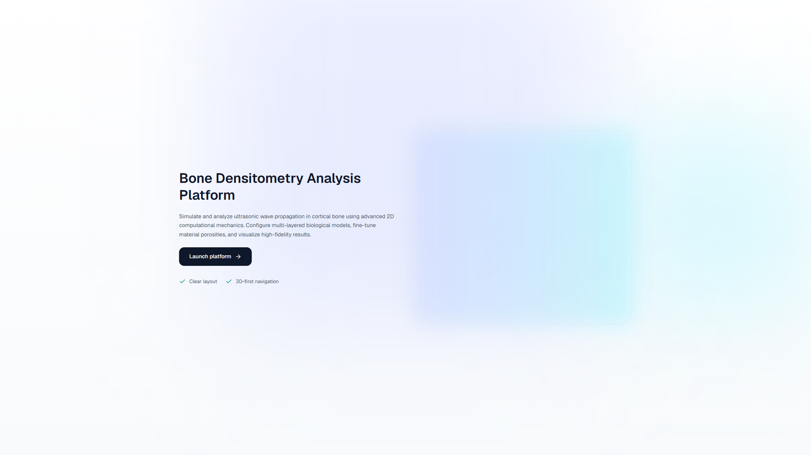

BDAT · Bone Densitometry Analysis Tool
Un vistazo a la aplicación
Configura modelos óseos, sigue las simulaciones y organiza su ejecución desde una sola interfaz.

Inicio
Una vista 3D introduce la plataforma de análisis óseo.
La portada muestra la interfaz de BDAT. La tabla y la cola contienen datos de demostración; no representan mediciones científicas reales.